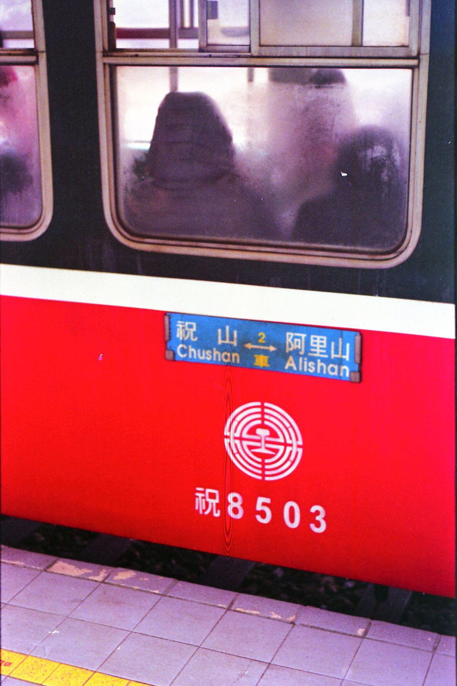

아리산 쟈오핑선, 입장권 세트 QR은 어디서 바꿀까?
입장 QR은 유락구 매표소에서, 열차 QR은 아리산역에서 — 같은 세트라도 쓰는 곳이 두 군데예요.
게시
"입장권이랑 같이 산 쟈오핑선 표, QR만 보여 주고 타면 되나요?" 아리산 쟈오핑선(沼平線)은 아리산역과 쟈오핑역을 약 6분에 잇는 숲속 지선 열차예요. 입장권과 열차표를 묶은 세트는 QR 하나로 끝나지 않고 쓰는 곳이 나뉩니다. 林業及自然保育署 아리산 임업철도 공식 안내와 공식 전자 입장권 사이트를 바탕으로 교환법, 시각표, 쟈오핑역 이후 동선을 2026년 10월 기준으로 정리해봤어요.
01 · 아리산 쟈오핑선 표, 한눈에 비교하기
| 항목 | 입장권+쟈오핑선 세트 | 현장에서 따로 사기 | 지선 1일권 |
|---|---|---|---|
| 일반 요금 | NT$300(입장권+편도 1회) | 입장권 NT$300 + 열차 NT$100 | NT$400(입장권 별도) |
| 사는 곳 | 공식 전자 입장권 사이트 '森林好好玩' | 열차: 아리산역 2층 창구(08:30~16:30) 또는 林鐵 웹 예약 | 아리산역 2층(이용 전날·당일) |
| 쓰는 법 | 입장 QR은 매표소, 열차 QR은 아리산역에서 종이 표로 교환 | 종이 표(지선은 전자표 없음) | 날짜 도장이 찍힌 날 지선 3개 무제한 |
| 유효 기간 | 처음 쓴 날부터 이틀 안 | 탑승일 지정 | 1일권 하루, 2일권(NT$500) 이틀 |
요금은 2026년 10월 기준 공식 안내예요. 森林好好玩 세트는 정가 NT$400(입장권 300+열차 100)을 NT$300에 팔고 있어서, 일반 입장권 값에 쟈오핑선 편도가 붙는 셈입니다. 열차는 6~11세 또는 키 115~150cm 어린이가 반값(NT$50)이고, 6세 미만이거나 키 115cm 미만이면 좌석을 쓰지 않는 조건으로 무료예요. 버스 같은 대중교통 표를 가지고 들어가면 입장권이 NT$150로 내려가니, 버스로 올라왔다면 표를 버리지 마세요.
02 · 입장권 세트 QR, 어디서 무엇으로 바꿀까
유락구 매표소에서 입장 QR 아리산 국가삼림유락구 입구 매표소(收費站)에서 직원이 QR을 찍으면 바로 들어가요. 전자 입장권을 보여 주면 주차비도 받지 않는다고 안내합니다.
아리산역에서 열차 QR을 종이 표로 쟈오핑선 QR은 개찰구에 바로 찍는 방식이 아니에요. 아리산역에서 직원에게 QR을 보여 주고 실물 표로 바꾼 뒤 들어갑니다.
이틀 안에 모두 쓰기 세트는 어느 하나를 처음 쓴 날부터 이틀 안(둘째 날 23:59까지)에 나머지도 써야 해요. 첫날 입장하고 다음 날 아침에 열차를 타는 일정도 됩니다.
바꾼 뒤에는 환불이 안 돼요 세트 중 하나라도 쓰거나 바꾸면 환불되지 않아요. 날씨가 애매하면 탈 시간이 정해진 뒤에 열차 표로 바꾸세요.
여권 챙기기 열차는 표에 맞는 신분증 원본을 보여 달라고 할 수 있어요. 어린이 반값표를 쓰려면 나이를 확인할 여권을 챙기세요.

03 · 아리산 쟈오핑선 시각표와 지선 1일권
| 구분 | 아리산역 출발 | 쟈오핑역 출발 |
|---|---|---|
| 오전 | 09:00·09:30·10:00·10:30·11:00·11:30 | 09:20·09:50·10:20·10:50·11:20·11:50 |
| 오후 | 13:00·13:30·14:00·14:30·15:10·15:40 | 13:20·13:50·14:20·15:00·15:30·16:00 |
| 걸리는 시간 | 약 6분 | 약 6분 |
공식 시각표(2024년 7월 6일부터 적용, 2026년 10월 기준)예요. 11:30 다음 열차가 13:00이라 점심 무렵 1시간 반이 비고, 쟈오핑역에서 아리산역으로 돌아오는 막차는 16:00입니다. 수요일에는 노송나무(檜木) 객차가 붙어서 달려요.
지선 1일권이 이득인 경우 지선 1일권 NT$400(2일권 NT$500)은 쟈오핑·선무(神木)·주산(祝山) 3개 지선을 무제한 타는 표예요. 쟈오핑 편도와 선무 편도만 타면 NT$200이라 따로 사는 편이 싸고, 같은 날 주산선 왕복(NT$300)까지 타면 1일권이 NT$100 이득입니다. 입장권은 들어 있지 않아요.
웹 예약은 14일 전부터 林鐵 웹 예약은 탑승 14일 전부터 전날까지 열려요. 지선은 전자표가 없어서 역 창구나 세븐일레븐 ibon에서 종이 표로 받아야 합니다.
주산선 일출 열차 주산선 일출 열차 출발 시각은 전날 16:30에 林鐵 웹사이트와 아리산역, 유락구 입구에 공지돼요. 1일권은 1월 1일 일출 열차에는 쓸 수 없어요.
04 · 쟈오핑역에서 걸어 내려오는 동선
쟈오핑역은 아리산역보다 높은 곳에 있어서, 올라갈 때 열차를 타고 내려올 때 걸으며 보는 순서가 편해요. 쟈오핑역에서 자매담(姊妹潭) 쪽으로 내려가 수진궁(受鎮宮)과 거목군 잔도(巨木群棧道)를 지나 아리산역 쪽으로 돌아오면 됩니다. 수산(水山) 쪽 산책로도 쟈오핑역에서 내려 걸어가요.
비가 오면 전동 유원차 아리산 전동 유원차(電動遊園車) 香林線은 수진궁 옆 香林站에 서고 방문자센터(遊客中心站)와 이어져요. 철도와 따로 요금을 내고, 정해진 시각표 없이 현장 상황에 맞춰 다닌다고 안내합니다.
열차로 돌아온다면 16:00 막차 기준 걷지 않고 쟈오핑역에서 열차로 내려오려면 16:00 막차를 기준으로 일정을 거꾸로 잡으세요.
산 위 날씨 확인 해발 2,000m가 넘는 숲이라 평지보다 서늘하고 날씨가 자주 바뀌어요. 태풍·폭우 때는 유락구를 닫거나 일부를 막을 수 있으니 출발 전에 林鐵와 유락구 공지를 보세요.

"持電子憑證(QR Code)至阿里山車站，給服務人員掃描QR code後，兌換實體票後入場." — 전자 QR을 아리산역 직원에게 보여 주고 실물 표로 바꾼 뒤 들어가라는 공식 판매처의 쟈오핑선 세트 안내예요.
아리산에 오르기 전이나 내려온 뒤 자이(嘉義) 시내에서 한 끼를 해결한다면 아리산/일월담 맛집 지도를 먼저 보세요. 자이역 근처 칠면조덮밥집 嘉義車頭火雞肉飯, 자이 구 감옥 맞은편 핸드드립 카페 幸福原在咖啡도 지도에 있어요.
지도에서 아리산·자이 맛집도 확인해보세요
산에 오르기 전후 자이 시내에서 들를 곳을 미리 찜해 두면 일정이 덜 빠듯해요.